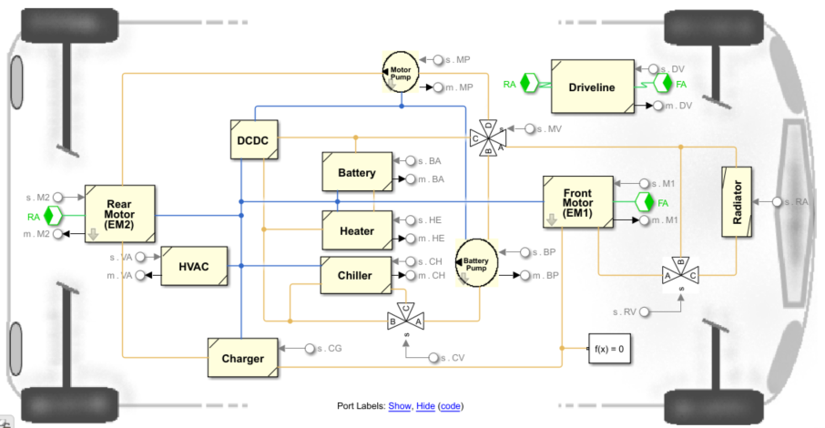
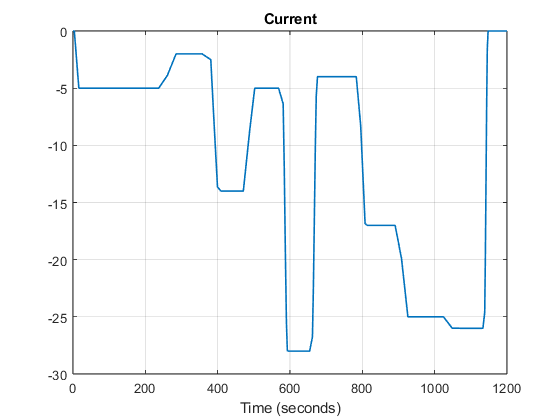

BEV Component Overview
This page summarises the reusable component packages that make up the BEV Simscape system model. It covers the standard folder structure, available component variants and fidelities, vehicle templates, parameter conventions, and how these connect to the BEV Setup App.
Contents
Components Folder Structure
Every component follows a standardised layout:
| Folder | Purpose |
|---|---|
Model/ | Component model variants (.slx) and parameter scripts (*Params.m) |
TestBench/ | Standalone test harness with boundary conditions |
TestCase/ | MATLAB unit tests (*PassTests.m) |
Documentation/html/ | Published HTML documentation pages |
Documentation/images/ | Screenshots and figures |
Utilities/ | Plot functions and helper scripts |
Library/ | Shared Simulink library blocks (select components only) |
README.md | Component-level summary and usage notes |
Component Inventory
All 12 components with their available fidelity variants. Fidelity names link to published HTML documentation where available.
| Component | Description | Fidelities | Thermal | Test Harness |
|---|---|---|---|---|
| BatteryHV | High-voltage battery pack | BatteryLumped, BatteryLumpedThermal, BatteryTableBased | Yes | Yes |
| BatteryHeater | PTC heater for cold-climate battery warming | Heater, HeaterDummy | Yes | Yes |
| BMS | Battery management system with SOC estimation variants | BMS, BMSSoCDirect, BMSSoCEKF | Yes | No |
| Charger | On-board charger with CC-CV control and thermal variants | Charger, ChargerDummy, ChargerThermal, ChargerThermalDummy | Yes | Yes |
| Chiller | Refrigerant-to-coolant chiller for battery thermal management | Chiller, ChillerNoCoolant, ChillerDummy | Yes | Yes |
| Controller | Vehicle-level supervisory controller | Controller, ControllerFRM, ControllerHVAC | No | No |
| Driveline | Mechanical driveline with optional braking | Driveline, DrivelineWithBraking | No | Yes |
| HVAC | Cabin climate system | HVACEmpiricalRef, HVACSimpleTh | Yes | Yes |
| MotorDrive | Electric motor drive unit with gear, thermal, and lubrication variants | MotorDriveGear, MotorDriveGearTh, MotorDriveLube, EmotorLib | Yes | Yes |
| Pump | Coolant circulation pump | Pump, PumpDummy, PumpDummyTh | Yes | Yes |
| DCDC | DC-DC converter driving the coolant pump | PumpDriver, PumpDriverTh | Yes | Yes |
| Radiator | Coolant-to-air radiator with fan | Radiator | Yes | Yes |
Totals: 12 components, 32 fidelity variants, 10 test harnesses.
Templates and Model Structure
The system model BEVsystemModel.slx assembles components via subsystem references. Pre-configured vehicle templates in Model/VehicleTemplate/ provide ready-made assemblies at different fidelity scopes. The Model/Display/ folder contains energy-flow visualisation subsystems (EnergyElectric, EnergyElectroThermal) used during simulation.

| Template | Description | Thermal | Auxiliary |
|---|---|---|---|
| VehicleElectric | Minimal electrical powertrain — battery, motor, charger, driveline | No | No |
| VehicleElecAux | Electrical powertrain with HVAC, pump, DCDC, and auxiliary loads | No | Yes |
| VehicleElectroThermal | Full electro-thermal vehicle with coolant loop, chiller, heater, radiator | Yes | Yes |
| VehicleElectroThermalLowTemp | Electro-thermal configured for cold-climate studies | Yes | Yes |
Fidelity-to-template mapping is defined in JSON config files under APP/Config/Preset/.
Parameters and Default Model Setup
Each fidelity variant has a matching parameter script in the component Model/ folder. The naming convention is FidelityNameParams.m — for example, BatteryLumpedThermal.slx is parameterised by BatteryLumpedThermalParams.m.
Harness parameter scripts (TestHarnessParams.m) in TestBench/ call the component param file and layer boundary-condition variables on top, so each harness is self-contained for standalone testing.

At the system level, the BEV Setup App generates a param setup script that calls all linked component param files in sequence. This populates the full vehicle workspace in one run for the selected model configuration.
Modularity and Reuse
Each component folder is a self-contained digital asset package. Models, parameters, test harnesses, unit tests, documentation, and utilities all live inside the component folder. To reuse a component in another project, copy the entire folder — no external dependencies need to be resolved.
Components within the same type share a common port interface, so switching fidelity is a single subsystem reference change at the system level. Thermal components expose Simscape conserving ports for coolant flow, allowing them to connect into a thermal loop at the system level while remaining independently testable with their own boundary conditions.
How This Connects to the BEV Setup App
The BEV Setup App reads JSON config files from APP/Config/Preset/ to populate its component dropdowns. Each config maps a vehicle template to the available fidelities per component. The app scans the component Model/ folders to verify that the listed .slx files exist on disk before presenting them as options.

Once a configuration is selected, the app generates setup and parameter scripts that wire the chosen component fidelities into the system model. The configured model is then ready for the engineering workflows elsewhere in the repository.
Adding a New Fidelity
To add a new fidelity variant to an existing component:
- Create the model .slx and its Params.m in the component Model/ folder. Use an existing fidelity in that component as a reference for the port interface.
- Add the new fidelity name to the relevant template entries in the JSON config under APP/Config/Preset/.
- Add a documentation description file and publish HTML to Documentation/html/.
- Update or create harness and test coverage in TestBench/ and TestCase/ as needed.
- Follow the existing naming conventions — the app picks up new fidelities on its next config load with no app code changes required.